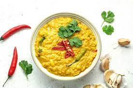

Ingredients
- cup red lentils (dhal)
- 1 onion, finely chopped
- 2 tomatoes, diced
- 3 cloves garlic, minced
- 1-inch ginger, grated
- 2 green chilies, sliced
- 1 cinnamon stick
4 cardamom pods
1 sprig curry leaves
- 1 tablespoon mustard seeds
- 1 teaspoon cumin seeds
Instructions
-
Rinse red lentils thoroughly and set aside.
- In a pot, heat oil and add mustard seeds, cumin seeds, cinnamon, cardamom, and curry leaves. Allow them to splutter.
-
Add chopped onions, garlic, and ginger. Sauté until onions are golden brown.
-
Stir in turmeric powder and chili powder. Cook for 1-2 minutes.
- SAdd diced tomatoes and cook until they soften.
Mix in red lentils and coat them in the spice mixture.
Pour in enough water to cover the lentils and bring to a simmer. Cook until lentils are tender.
Adjust salt according to taste.
Serve hot as a side dish with rice or flatbread.